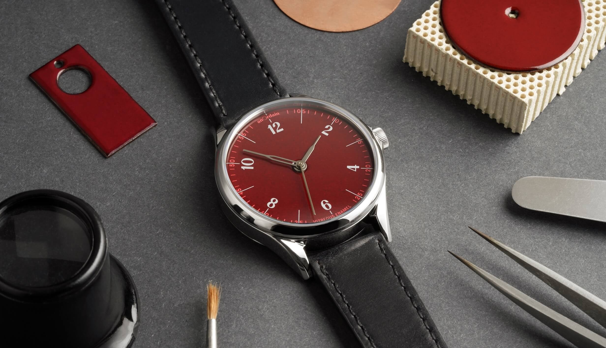
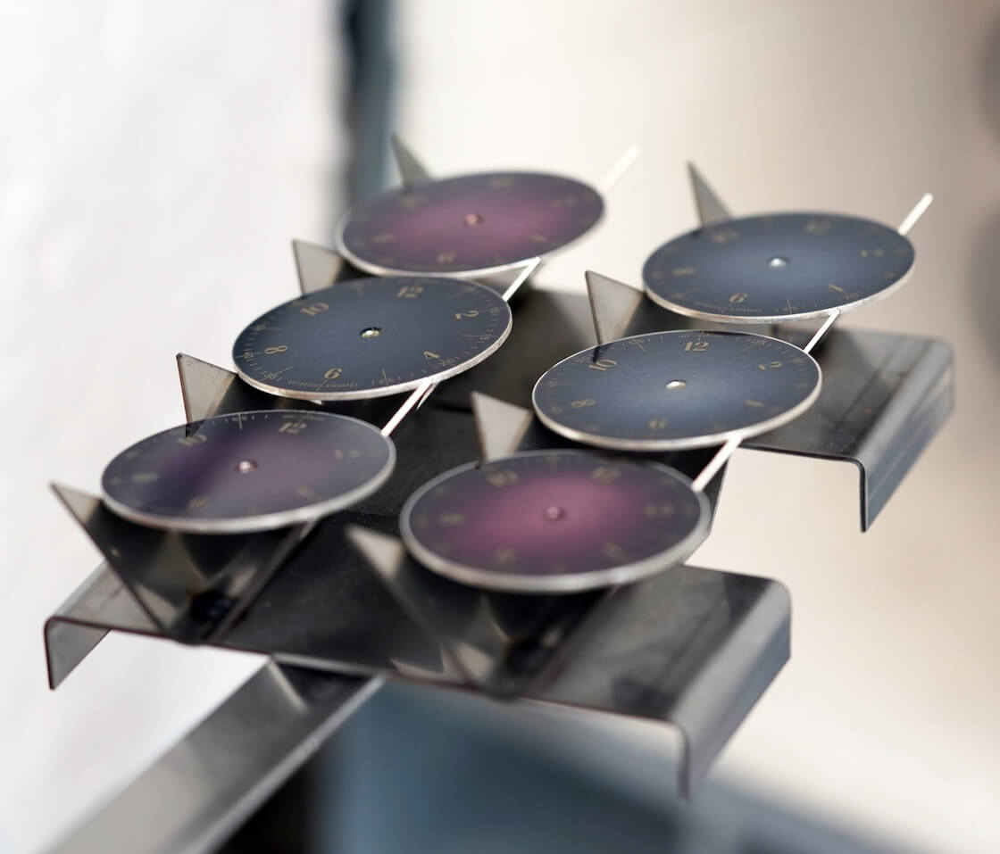
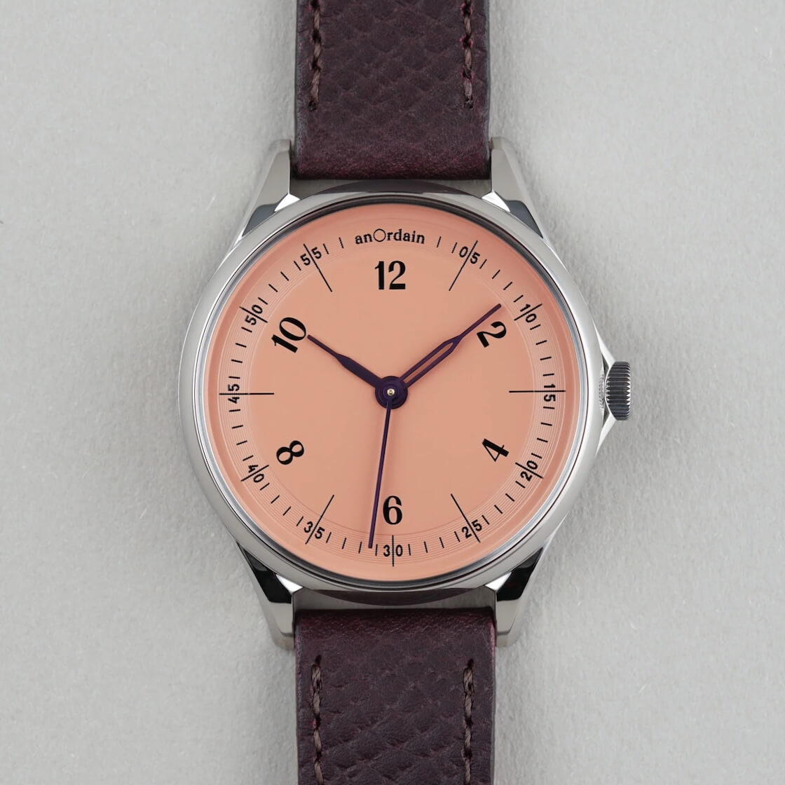
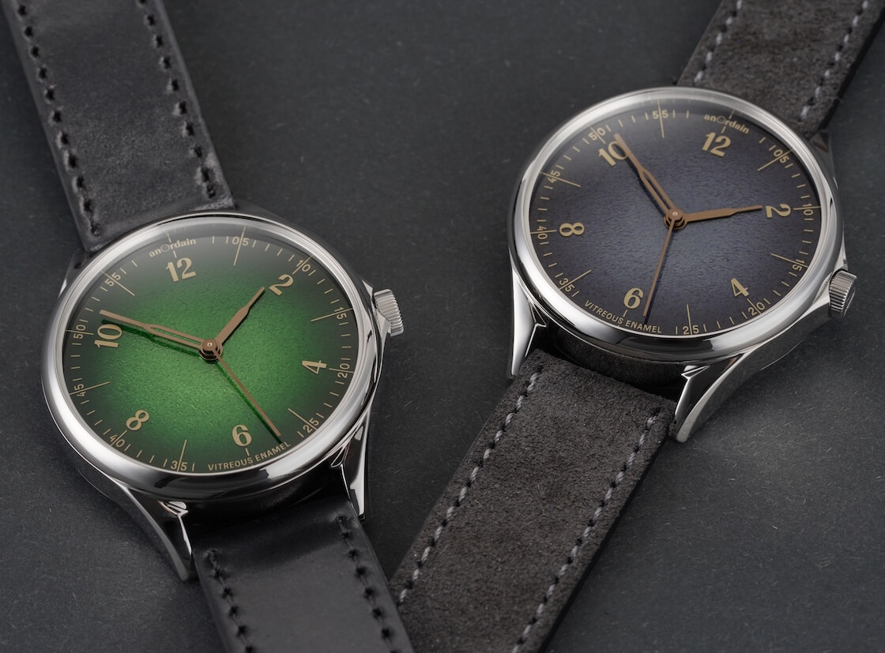
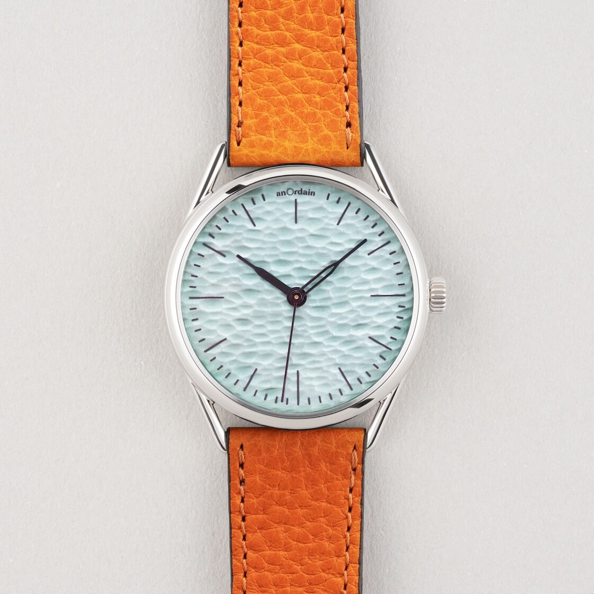
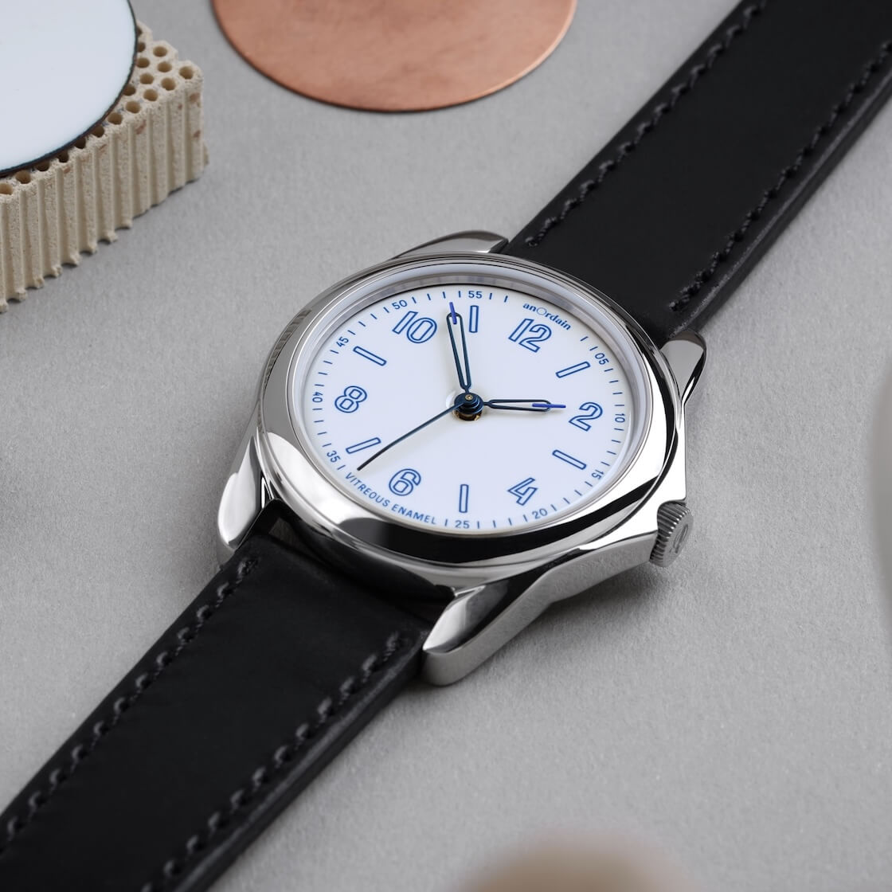
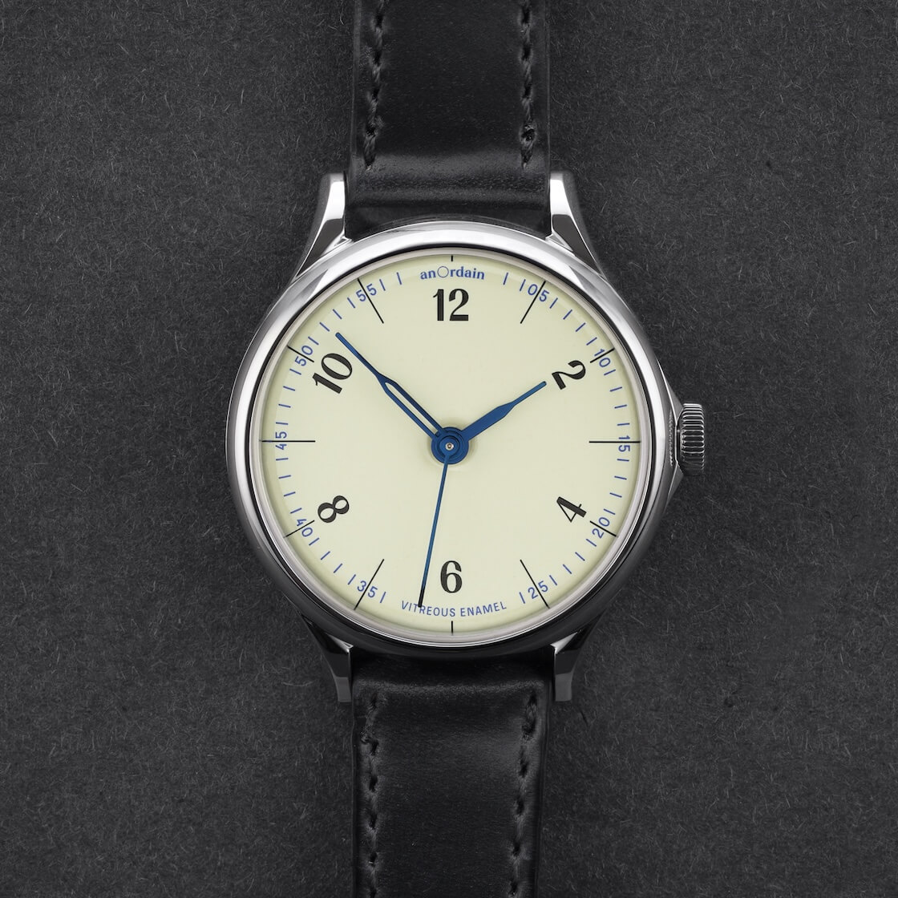
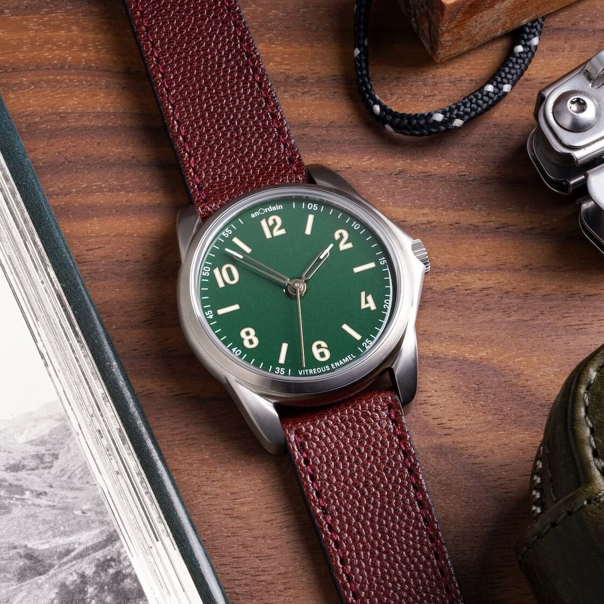
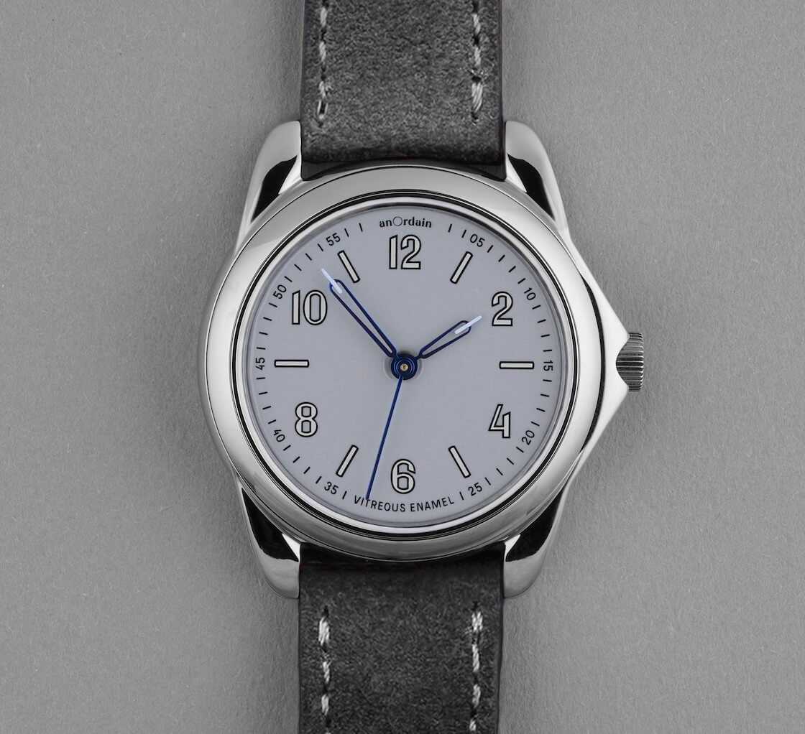
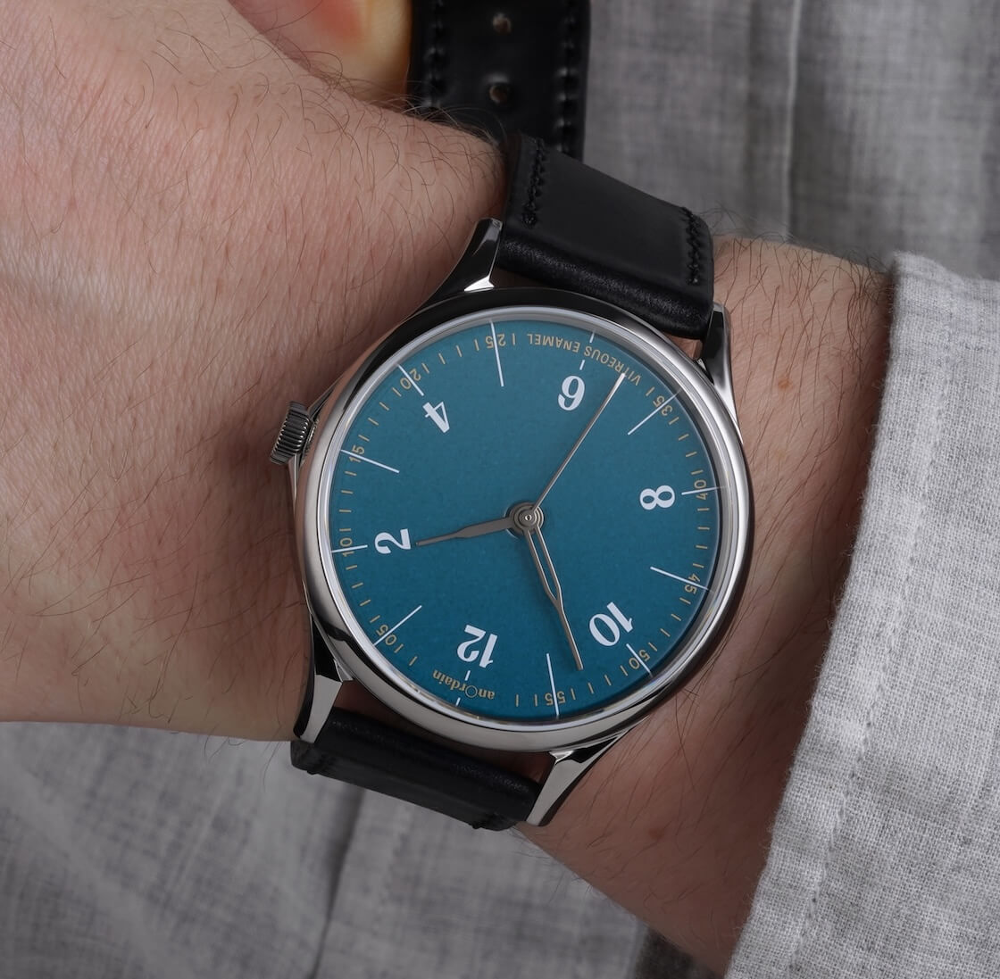

Brands That Care About Straps: anOrdain
For sure, the enamel dial is the undisputed star of any anOrdain watch, but the artistry does not end there. The Glasgow studio's design philosophy runs much deeper, with a great focus on their strap selection. So what makes their approach to the complete watch so effective? Let's explore.
 Nenad Pantelic • July 20, 2025
Nenad Pantelic • July 20, 2025

"Brands That Care" is a series of articles about watch companies that pay close attention to their straps. Choosing a strap should be more than just checking a box. There is a significant difference between a brand that treats a strap as a generic afterthought, and one that views it as an integral part of the design.
To the brands that care about straps - hats off to you.
anOrdain
Originating from Glasgow, Scotland, anOrdain is a small watchmaking studio that has created a special niche in the world of independent brands. While many companies focus on the mechanical complexity, anOrdain's magic lies "on the surface". They are famous for their beautiful, and notoriously difficult to make, enamel dials.
Creating enamel dials involves fusing powdered glass to a metal base at temperatures exceeding 800°C. The process is notoriously fickle, but the result is a dial with a deep, glossy, and uniquely vibrant color that paint or lacquer could never replicate.

But anOrdain is not just a dial maker. They design and develop complete watches. This is where they truly excel, as it is clear they have paid attention to every necessary detail, not just a single component. Their straps, for example, have also received much love. Let's explore why.
What does anOrdain do well?
In my opinion anOrdain's design success comes down to two key principles:
- Contrast
- Variety
Contrast
If you have ever been around designers, you might have heard them lament a client's request to make a design “pop” more. OK, I admit, it sounds like a vague, arbitrary term. But what often boils down to is a fundamental design principle: contrast.
This is a principle that the team at anOrdain has mastered, not just on their watch dials, but in the entire package.
In the design, contrast refers to the degree of difference between various elements, particularly those placed next to each other. These differences are what make certain elements stand out.
I think that team at anOrdain is using the strap as a primary tool of contrast to achieve one goal: putting the spotlight firmly on their beautiful enamel dials.
Look closely at anOrdain's pairings. You will notice they don't create contrast within the strap itself with busy patterns or loud colors. Instead, the strap as a single unit acts as the contrasting element against the watch head.

A cream dial might be paired with a black strap. A polished steel case and a fumé dial might be grounded by the texture of a grainy suede strap. These choices are deliberate. By creating a distinct difference between the texture, color, or finish of the strap and the dial, anOrdain creates a visual hierarchy.
The strap becomes the supporting frame, pushing the dial forward and making it the real hero.
It is this use of contrast that prevents the entire piece from feeling flat and, in doing so, makes their dials truly "pop". Without a single cliché in sight.
Variety
In design, variety creates visual interest and keeps a design from becoming monotonous and predictable. For sure, consistency has its place, but a lack of variety can cause an observer to lose interest quickly. The team at anOrdain seems to understand this as proven by the incredible diversity of their strap collection.
Rather than sticking to a common theme or a limited palette, anOrdain leans into variety. Their collection is a playground of textures, colors, and finishes.

You will find everything from smooth, classic calfskin to textured Epsom, and soft suede. The color options range from vibrant and bold to subtle and earthy, and the stitching can be either tonal to blend-in or contrasting to add a subtle pop.
But, this is not variety for the sake of variety. A chaotic collection of options would be pointless. The vast array makes sure that for every unique enamel dial they create there is a strap that doesn't just match, but complements it perfectly.
Examples






Conclusion
In the end, anOrdain's approach is a masterclass in thoughtful design. Their strap variety is not a distraction. It is a curated library of options with one clear purpose: to perfect the entire package.
Their work proves that every detail matters in making the watch not just good, but truly exceptional. anOrdain, hats off to you!